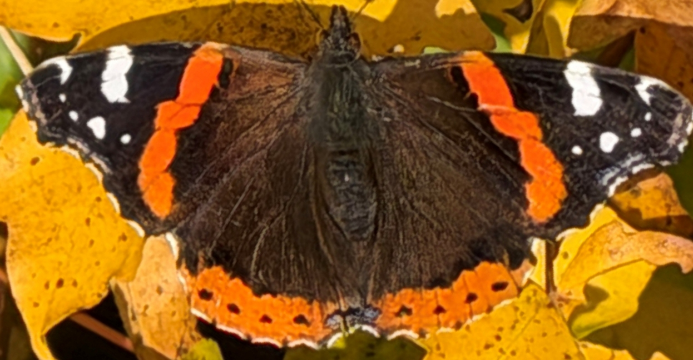
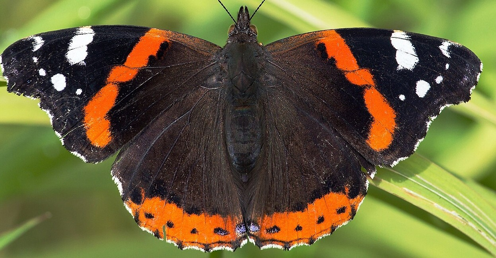

I was surprised to see a red admiral butterfly on a walk around the hedgerows this late in the year.
On investigation, it turns out they stay on the wing into November. Butterfly Conservation says red admirals keep flying until October or November, and with the incredible warm weather we've had this year, perhaps it isn't that surprising. Still, it was a great thing to see against the yellowing maple leaves on a warm morning.

The red admiral on yellowing maple leaves, a warm morning at Reaside.
Will it find a mate?
That's the question. There isn't much for a red admiral to eat at this time of year. The two things they'll go for in autumn are the flowers of ivy, which is one of the last good sources of nectar, and fallen fruit, so the windfall apples around the farm should be doing some good. They also like buddleia earlier in the season.
Red admirals are really a migratory butterfly. Each spring and summer they move north into Britain from North Africa and continental Europe, and it's the immigrants' eggs, laid on nettles, that produce the butterflies we see from July onwards. In autumn the traditional story is that they head back south again.
That story is changing. As the climate warms, more and more red admirals are staying put and overwintering in the UK. Butterfly Conservation notes that overwintering has been recorded mainly in the far south of England, with numbers appearing to rise in recent years. They aren't true hibernators in the way a peacock or small tortoiseshell is, but they'll find a crevice to shelter in if it turns cold and wet, perhaps in a log pile, a hedge bottom or amongst ivy, and then come out again on a mild sunny day. It's good news for the species: Butterfly Conservation's figures show red admiral abundance across the UK rose by 234% between 1976 and 2019.
As for the mating question, the males are territorial, perching and chasing off intruders, and the females only mate with males that hold a territory. Whether this one finds a partner this late in the year, we'll never know.
Did I get the species right?
I also wanted to check I had the species right, as the small tortoiseshell and painted lady have similar colouring. A few things set them apart:
- Red admiral: almost black wings with a broad red-orange band across each forewing, white spots near the forewing tips, and an orange border on the hindwings.
- Small tortoiseshell: orange-toned wings with black markings, and a row of blue crescents along the wing edges, which is the giveaway.
- Painted lady: a paler, more subtly patterned orange butterfly, and a summer migrant, mostly seen between July and September.
Our butterfly has the dark wings, the red band and the white forewing spots, so red admiral it is.
Gutenberg, not Pollock
Comparing some online images, it turns out that butterfly markings are incredibly consistent. Below, on the left is the picture taken here, and on the right is the picture from the Red Admiral page on Wikipedia.

Left: the red admiral at Reaside. Right: red admiral from Wikipedia, photo by Christian Fischer, CC BY-SA 4.0, via Wikimedia Commons.

The orange-red bands on the forewings, the white spots near the tips, and the orange border and black dots on the hindwings are all in the same places on both, even though one butterfly was photographed in Shropshire and the other in Germany.
So what I learnt today is that colour splodges on butterflies are more Johannes Gutenberg than they are Jackson Pollock.